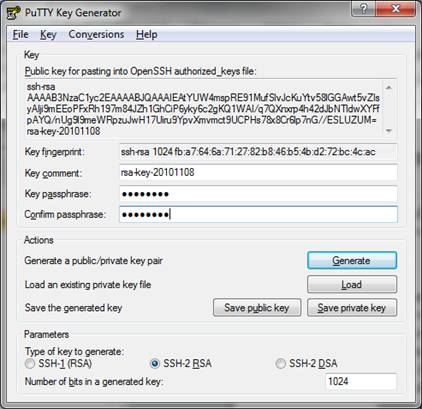
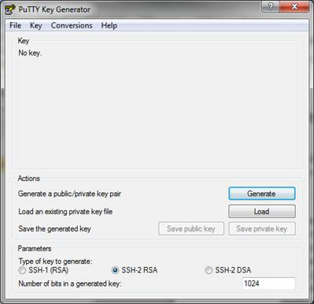
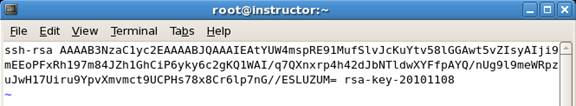
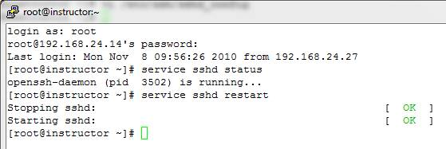
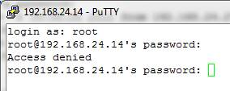
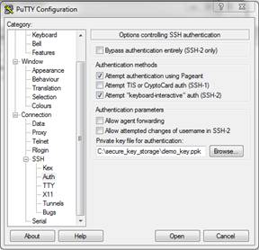
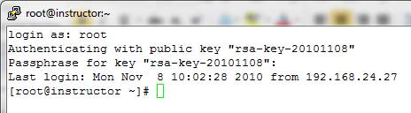

Protecting Your Linux Server from Root Password-Guessing Attacks
Take one look at /var/log/secure on an Internet-connected server and you'll immediately understand the need for securing your root account. The bad guys are constantly trying 'root' and other usernames, attempting to login to your server using SSH or some other protocol. If you use a simple password, it's only a matter of time before your server is compromised by a password-guessing attack. What can you do?
The best practice is to disallow SSH logins by root, thus eliminating a big part of the risk.
The problem is that doing so also eliminates a lot of convenience for sysadmins and complicates the use of tools such as WinSCP for file copy from your Windows desktop or laptop to your Linux or UNIX server.
A fairly simple solution is to use public/private keypairs for authentication. The public key is stored on the Linux/UNIX server and the private key is stored on your local Windows computer. When you attempt to connect to the Linux/UNIX server from your Windows computer, authentication is done with the keypair instead of a password. Password authentication is actually disabled for root, so no amount of password guessing will work for authentication.
Here's how to do it:
1. Start by downloading the PuTTY Windows installer from http://the.earth.li/~sgtatham/putty/latest/x86/putty-0.60-installer.exe . Run the installer on your local Windows computer.
2. Now, you must generate the keypairs. The PuTTY Windows installer you just ran installs an application called PuTTYgen that you can use to generate the keypairs. The installer probably placed PuTTYgen (and the other PuTTY applications) in Start>>All Programs>>PuTTY.
3. When you run PuTTYgen for the first time, you must generate a new keypair. At the bottom of the PuTTYgen window are three parameters choices including SSH-1 (RSA), SSH-2 RSA, and SSH-2 DSA. SSH-2 RSA is the default choice with a default key length of 1024 bits. Longer key lengths are more secure, but require more processing power. 1024 bits is an acceptable compromise at this time (late 2010), but may not be acceptable in the future as computer processing power continues to increase.
4. Click the button labeled Generate to produce your public and private keys. (You must move your mouse pointer over the blank area at the top of the screen to generate some randomness for use in producing the keypair. Just move your mouse pointer in a cirular motion over the blank area until the progress bar reaches the far right side and PuTTYgen generates the keys.)
5. You can now save the private key on your local laptop or desktop computer and copy the public key to the remote Linux/UNIX server.
6. Enter and confirm a passphrase to protect the private key in the two fields in PuTTYgen.
7. Click the button labeled 'Save private key' and select a location on your local hard drive to save the private key. (Remember to protect your private key by storing it securely!) I also like to save my public key as a text file to simplify using it in the future.
8. Copy the gibberish-like text that is the public key (at the top of the PuTTYgen window) and paste it into /root/.ssh/authorized_keys on your server (you might have to create the .ssh directory and you'll probably have to create the authorized_keys file. Note also that the .ssh directory is a hidden directory whose name starts with a period.) If you saved your public key as a text file in the previous step, you can simply copy the contents of that file to /root/.ssh/authorized_keys.
9. On your Linux/UNIX server, inspect /etc/ssh/sshd_config to ensure that RSA authentication and public key authentication are both allowed by modifying three lines in the sshd_config. Depending on your system, you will have to change "no" to "yes" or uncomment the lines to allow the authentication. Also, ensure that the path to the authorized_keys file is set to "%h/.ssh/authorized_keys" and uncomment the line. (I found the three lines at approximately line 43 on a RedHat system and approximately line 29 on a Debian system.) When you're done, the lines should look like this:
RSAAuthentication yes PubkeyAuthentication yes AuthorizedKeysFile %h/.ssh/authorized_keys
10. In order for the changes to be read into RAM, you must restart SSHD:
11. If you attempt to log on now with the username root and the root password, the logon attempt will be denied:
12. You must now configure PuTTY to use the public/private key pair for authentication. Open PuTTY, in the left-hand menu area expand SSH and select Auth. On the right-hand side of the window, browse to the location where you stored your private key or simply enter it in the field below "Private key file for authentication:".

Again, in the left-hand menu, select Session (at the top of the list). On the right-hand side of the screen, enter the IP address or hostname of your Linux server and click the button labeled "Open".
13. When PuTTY connects to the server, enter "root" for the username. You will be prompted for the passphrase you configured for your private key. Enter the correct passphrase and you should be logged on to your server as root.
The benefit of performing the preceding steps is that it is nearly impossible for an attacker to log on to your server as root by guessing the password. In order for the attacker to masquerade as root, she or he would have to have your private key and know the passphrase associated with it.
| Share |

|
Talkback: Discuss this article with The Answer Gang
Don R. Crawley is the author of "The Accidental Administrator: Linux Server Step-by-Step Configuration Guide" and the President of http://soundtraining.net , a Seattle-based IT training firm. He is a veteran IT guy with over 35 years experience in technology for the workplace, and holds multiple certifications on Microsoft, Cisco, and Linux products. Don can be reached at (206) 988-5858 or don@soundtraining.net .